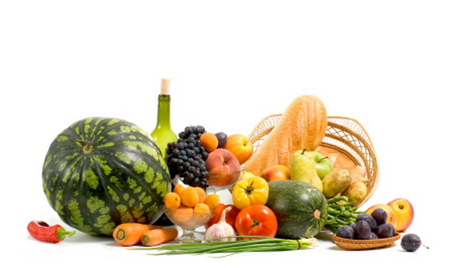

LETNJA ISHRANA

Leto je godišnje doba koje nam donosi najviše opuštanja, odmora pregršt sezonskih plodova. Najrazličitije vrste voća i povrća u kojima možemo da uživamo, osiguravaju nam obilje vitamina i minerala koja podstiču različita korisna delovanja u našem organizmu.
U letnjim mesecima,voće i povrće su dragocene namirnice jer sadrže i veliki procenat vode i sve elektrolite koje gubimo znojenjem. Sam organizam leti, za vreme vrelih dana, traži hranu koja je lagana za varenje, sa više vlakana, a manjom količinom masnoća i belančevina. So, suhomesnati proizvodi, pržena i masna jela su svakako hrana koju leti treba izbegavati.
Kako nas leto najčešće asocira na more, a kako je i Svetska zdravstvena organizacija propagira mediteransku ishranu, kao jednu od najzdravijih,sa sveukupnim pozitivnim uticajem na organizam, preporuka je da makar u letnjim mesecima uživamo u čarima mediteranske ishrane. Jer osim što je zdrava, ona je ukusna i na izgled vrlo atraktivna.
Znači leto je vreme za uživanje u ukusnim letnjim namirnicama /voću, povrću, semenkama, orasastim plodovima,začinskom bilju, svežoj ribi i plodovima mora. Naravno, posebno treba istaći važnost korišćenja maslinovog, ekstra devičanskog ulja, koje zbog visokog sadržaja omega 3 masnih kiselina, ima brojne pozitivne uticaje na čoveka(štiti od upalnih procesa, čisti krvne sudove i najbolja je prevencija za bolesti srca i krvnih sudova).
Leti je posebno korisno uživati u kajsijama, breskvama, dinjama, lubenicama, šargarepi, paradajizu, tj. u narandžastom, žutom i crvenom voću i povrću. Ono sadrži biljne pigmente koji poseduju antioksidativne osobine i podstiču pigmentaciju. Pomažu u prevenciji raka kože i sprečavaju prevremeno starenje kože.
Mlečni proizvodi sa manjim sadržajem masti osiguraće nam potreban unos kalcijuma i vrednih proteina. Posebno su korisni fermentisani mlečni proizvodi (jogurt, kiselo mleko, kefir) koji sadrže enzime, vlakna, vitamine i minerala, kao i probiotske bakterije korisne za održavanje crevne flore, naročito u letnjim mesecima.
Zimska jela kao što su crveno meso, zapržena i masna jela svakako treba izbegavati u letnjim mesecima. Proizvodi od soje se lako vare i dobar su izvor proteina i odlična zamena za životinjske proteine u letnim mesecima.
Leti je izuzetno važno održavati adekvatan unos tečnosti, odnosno vode. Zbog visokih spoljnih temperatura, organizam se više znoji i dolazi do smanjenja vode u ćelijama. Dolazi do osećaja žedji, ali moramo znati da kada smo osetili žedj, već je došlo do delimične dehidratacije.
U toku leta trebalo bi izbegavati alkoholna, gazirana i zasladjena pića, kao i pića bogata kofeinim, jer mogu doprineti povećanu dehidratacije, jer stimulišu izlučivanje vode iz organizma.
Svakako, u letnjim mesecima, najbolji izbor za nadoknadjivanje tečnosti su izvorske i mineralne negazirane vode, nezasladjeni čajevi, voćni sokovi bez dodatog šećera.
Iako nam leti najvise prijaju hladni napici, treba da znamo da ćemo se bolje rashladiti ako pijemo tečnost sobne temperature.
REZIME
GLAVNE PREPORUKE ZA LETNJU ISHRANU:
1.RASPOREDITI DNEVNI UNOS HRANE NA 5 DO 6 MANJIH OBROKA
2.SVAKODNEVNO UNOSITI 3 DO 5 PORCIJA SVEŽEG VOĆA I POVRĆA
3.UVRSTITE U ISHRANU INTEGRALNE ŽITARICE, A IZBEGAVAJTE TESTA OD BELOG BRAŠNA I MASNE SOSOVE
4.SMANJITE UNOS MESA I ZASIĆENIH MASTI DO 10% DNEVNOG UNOSA IZBEGAVAJTE MESNE PRERADJEVINE
5.IZBEGAVAJTE JAKO SLATKE NAMIRNICE KAO STO SU TORTE , KOLAČI...
6.JEDITE ŠTO VIŠE RIBE
7.PIJTE VODU I PRE NEGO ŠTO OSETITE ŽEĐ , IZBEGAVAJTE JAKO HLADNE, GAZIRANE I ZASLAĐENE NAPITKE